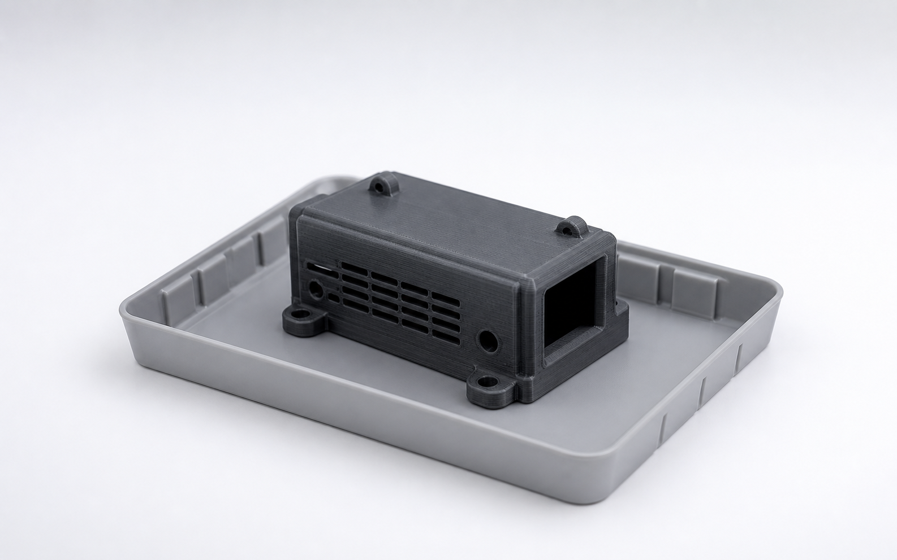

TRACEABILITY · EDGE FIRST
Каждая деталь оставляет след
Полноэкранная визуальная спецификация: открытый ledger, крупный физический объект и единая цепочка происхождения вместо таблицы и bento-сетки.

ГОДЕН
PT-000271
Корпус датчика v7 · 104 гИзделие v7→ slice 74d2→ job #041→ K1C-04→ PETG #17→ CV годен→ Тара A